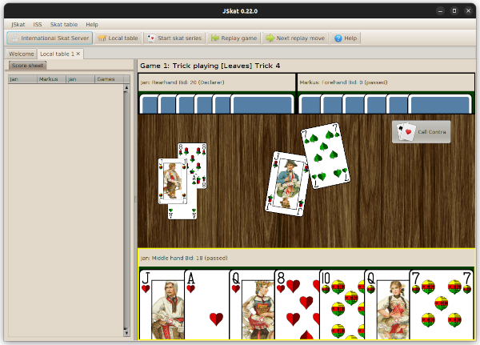

Screenshots
Der neue Startbildschirm zeigt die zwei Spieloptionen für JSkat: Sie können offline gegen die mitgelieferten KI-Spieler oder online gegen Menschen oder die derzeit stärksten KI-Spieler auf dem Internationalen Skat-Server spielen.
Reizen
Ausspielen

Die Lobby des ISS. Sie haben eine Übersicht über alle angemeldeten Spieler und über alle Tische, an denen gerade gespielt wird.
 Deutsche
Version
Deutsche
Version English
version
English
version